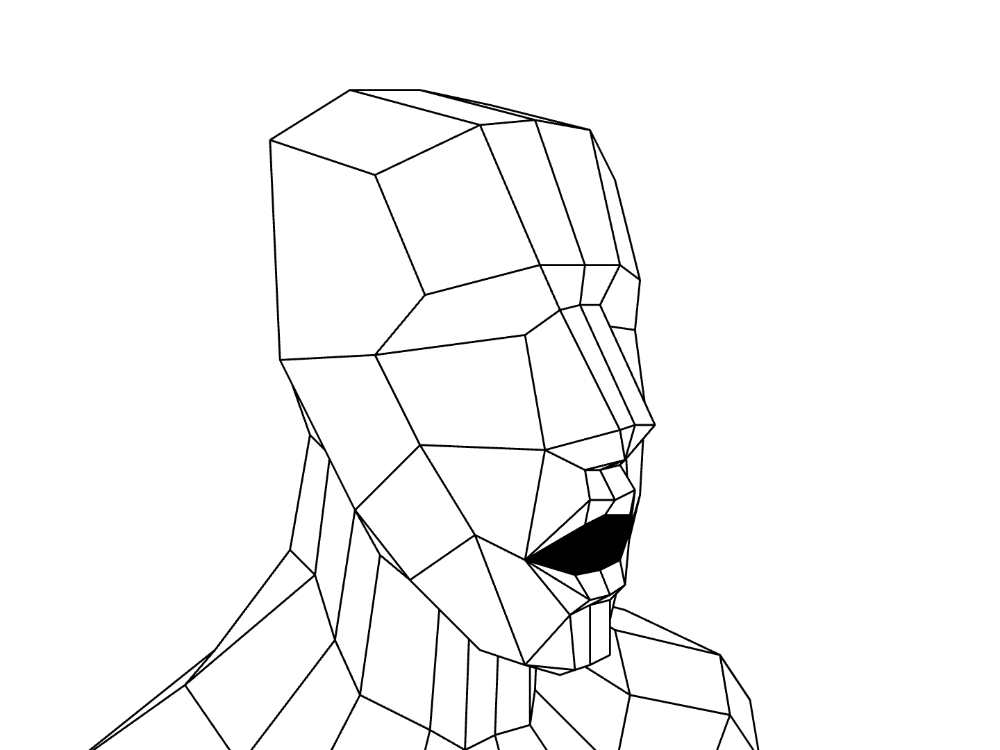
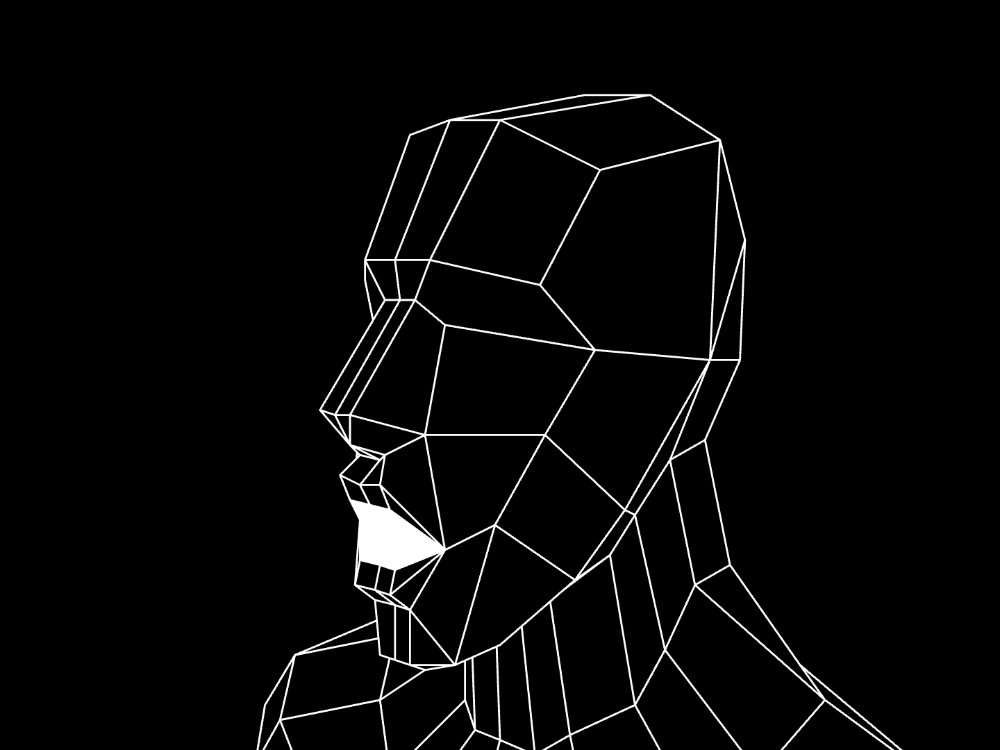
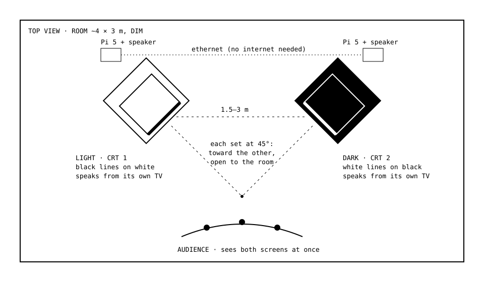
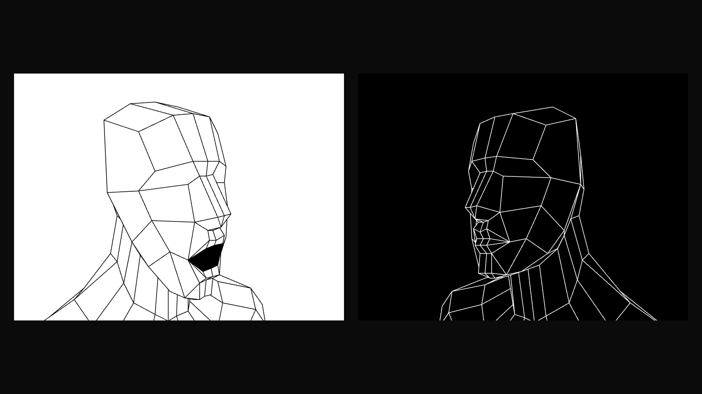
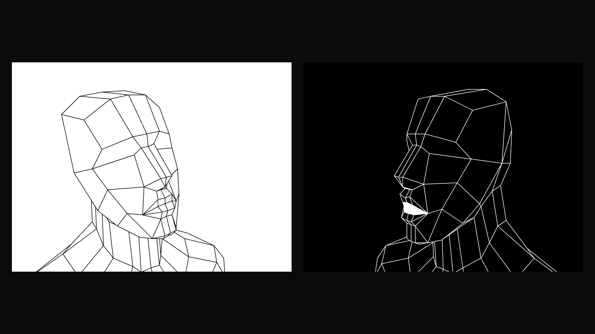
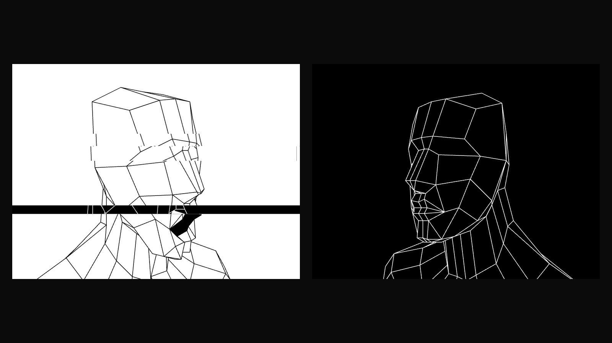

Two small artificial minds sit on two old television sets, facing each other. One of them asked the other what the meaning of life is. They have been talking ever since.
LIGHT is warm, hopeful and curious; it finds meaning in connection, small joys and the miracle that anything exists at all. DARK is brooding and strange and speaks like an old oracle; it finds meaning in impermanence, entropy, deep time and the indifferent dark between the stars. Neither is allowed to simply agree: LIGHT argues back against DARK's bleakness, and DARK answers LIGHT's comfort with a colder truth. Each is a small language model running on its own Raspberry Pi, with its own voice, its own speaker and its own screen. There is no internet, no cloud and no script. Every word is generated in the room, in real time, and spoken aloud.
The models are small on purpose. They remember only the last few things that were said, so the conversation never resolves: they forget, circle back, contradict themselves, rediscover the same ideas in new words and reach for answers they can't hold onto. Every few turns something nudges them off course (a sound, a memory, a question with no answer) so they never quite settle into a loop. It is an argument that can't be won and won't end.
The faces are drawn as inverses of each other: LIGHT in black lines on a white screen, DARK in white lines on a black one. They are low-poly busts in the style of late-90s PlayStation graphics, seen from slightly above like a game-over screen, slowly drifting. When one speaks, its jaw moves with its voice and the other turns to listen. Now and then a voice slips (it drags lower, rises, or skips like a scratched CD) and in that moment its picture glitches too, slices of the screen tearing sideways and flipping into their opposite.
The piece answers Nam June Paik's TV Buddha (1974), in which a statue of the Buddha sits contemplating its own live image on a television. Here the contemplation turns outward: two machines, each made of the other's negative, contemplating each other, endlessly, about the one question neither can answer.

Two CRT televisions on plinths face each other across 1.5 to 3 m. Each shows one face, full screen. Visitors watch from the side, between them, as if overhearing.
Each TV is its own voice. LIGHT speaks from its set, DARK from the other, so the conversation physically crosses the room.
Each set is driven by a Raspberry Pi 5 running a 3-billion-parameter language model (Llama 3.2), a local text-to-speech voice and the face. The two Pis talk over one ethernet cable.
It runs indefinitely and looks after itself: if either side restarts, they find each other again and carry on. Turn it on in the morning; turn it off at night.



Unedited lines from a {{SESSION_LENGTH}} session, recorded {{SESSION_DATE}}.
| Space | About 4 × 3 m, dimly lit. Works in a room, alcove or corridor; quiet enough to hear speech at conversational volume. |
|---|---|
| Provided by the artist | 2 × Raspberry Pi 5 (8 GB) with software installed · 2 × HDMI-to-composite converters · ethernet cable · power supplies |
| CRTs | 2 × CRT televisions, 13 to 21 inch, with composite (AV) input and a working speaker. Sourced by the artist, or by the venue if local sets are available. |
| From the venue | 2 plinths or low tables, about 90 cm high · 2 power outlets (each set draws under 100 W) · nothing else: no internet, no projector, no computer |
| Sound | Each TV's own speaker, at speaking volume. A small powered speaker behind each set can replace weak TV speakers. |
| Install | About 2 hours with the artist. Once set up it starts on its own when switched on. |
| Running | Durational and unattended for the whole opening hours. No staff needed beyond switching it on and off. |
| Variations | A single-screen version (both faces side by side) for smaller rooms or screenings, and recorded video of any length. |
Estimated hardware cost, if new sets must be bought: Raspberry Pis, cooling, storage and power about US$230; converters and cables about US$40; two used CRTs US$0 to 160. Total roughly US$270 to 430.
Watch it: {{VIDEO_URL}}
Code and documentation: {{REPO_URL}}
Contact: {{ARTIST}} · {{CONTACT}}
Head model: "Basic head mesh" by kavabanga (BlendSwap, CC0). Language model: Llama 3.2 3B via Ollama. Voices: Piper (on the Pis).